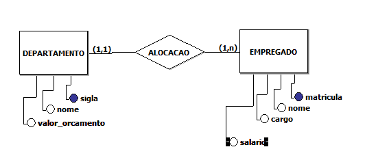
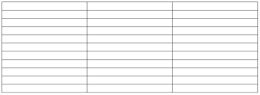
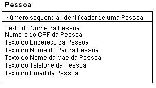

CONCEITO
Segundo Korth, um banco de dados “é uma coleção de dados inter-relacionados, representando informações sobre um domínio específico”, ou seja, sempre que for possível agrupar informações que se relacionam e tratam de um mesmo assunto, posso dizer que tenho um banco de dados.
Podemos exemplificar situações clássicas como uma lista telefônica, um catálogo de CDs ou um sistema de controle de RH de uma empresa.
Já um sistema de gerenciamento de banco de dados (SGBD) é um software que possui recursos capazes de manipular as informações do banco de dados e interagir com o usuário. Exemplos de SGBDs são: Oracle, SQL Server, DB2, PostgreSQL, MySQL, o próprio Access ou Paradox, entre outros.
Por último, temos que conceituar um sistema de banco de dados como o conjunto de quatro componentes básicos: dados, hardware, software e usuários. Date conceituou que “sistema de bancos de dados pode ser considerado como uma sala de arquivos eletrônica”. A Figura 1 ilustra os componentes de um sistema de banco de dados.

Bancos relacionais
Um banco de dados relacional é um tipo de banco de dados que armazena e fornece acesso a pontos de dados relacionados entre si. Bancos de dados relacionais são baseados no modelo relacional, uma maneira intuitiva e direta de representar dados em tabelas. Em um banco de dados relacional, cada linha na tabela é um registro com uma ID exclusiva chamada chave. As colunas da tabela contêm atributos dos dados e cada registro geralmente tem um valor para cada atributo, facilitando o estabelecimento das relações entre os pontos de dados.

Entidades ou tabelas
Todos os dados de um banco de dados relacional (BDR) são armazenados em tabelas. Uma tabela é uma simples estrutura de linhas e colunas. Em uma tabela, cada linha contém um mesmo conjunto de colunas. Em um banco de dados podem existir uma ou centenas de tabelas, sendo que o limite pode ser imposto tanto pela ferramenta de software utilizada, quanto pelos recursos de hardware disponíveis no equipamento.
As tabelas associam-se entre si por meio de regras de relacionamentos, que consistem em associar um ou vários atributos de uma tabela com um ou vários atributos de outra tabela.

Atributos ou campos
Uma Entidade pode ser definida como qualquer coisa do mundo real , abstrata ou concreta , na qual se deseja guardar informações. Um atributo é tudo o que se pode relacionar como propriedade da entidade. (coluna , campo ). Assim como: Código do Produto (Entidade Produto) , Nome do Cliente (Entidade Cliente).
